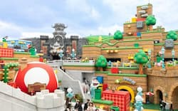

Yumeto Kozuma
About Me

My name is Yumeto Kozuma. I live in Osaka in Japan. I love to listening to music, so I often go to concerts by several musicians. I also love playing video game in my free time. There are still a lot I don't understand about programming, but I'm looking forward to learning with you guys.
Osaka, Japan

Osaka is famous for food. Osaka is called Japan's Kitchen, so there are a lot of delicious food like takoyaki. In addition, they have many location for sightseeing. One of the famous place us Universal Studio Japan. It's based on Hollywood moviews and has attractions like Harry Potter, Minions, and Super Nintendo World.